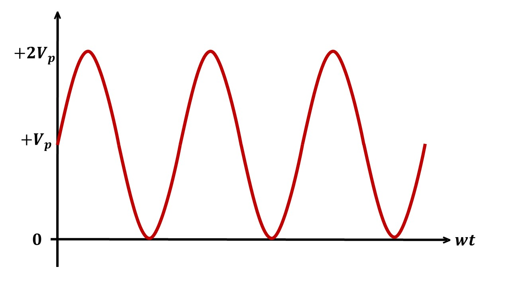
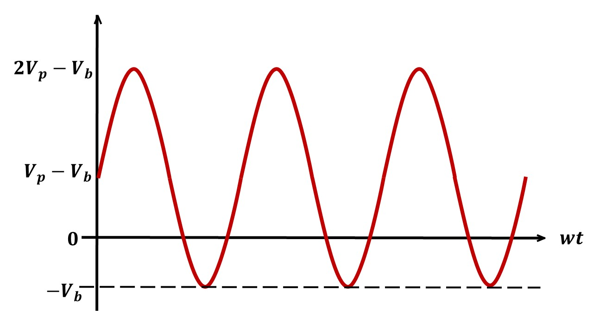

Study of Clamper Circuits
What is a clamper?
Clampers are electronic circuits that shift the DC level of the input signal to the desired level without changing the shape of the input signal.
It is also known as a level shifter.
It consists of a capacitor, diode, DC voltage source (battery) and a load resistor.
Types of Clamper circuits
There are six types of clampers based on the DC level shift provided to the input signal.
| Type | Circuit Diagram | Output waveform | Output Voltage | |
|---|---|---|---|---|
| 1 | Positive unbiased clamper |
 | Vo = 2 Vpsin(wt) |
|
| 2 | Negative unbiased clamper |
Vo = -2 Vpsin(wt) |
||
| 3 | Positive biased clamper with positive reference |
Vo = 2 Vpsin(wt) + Vb |
||
| 4 | Positive biased clamper with negative reference |
 | Vo = 2 Vpsin(wt) - Vb |
|
| 5 | Negative biased clamper with positive reference |
Vo = -2 Vpsin(wt) + Vb |
||
| 6 | Negative biased clamper with negative reference |
Vo = -2 Vpsin(wt) - Vb |
Components used in Clampers
1. Diode
A diode is an electronic component that allows flow of current in only one direction.
A diode has two terminals (anode and cathode).
A diode conducts only when the voltage across anode and cathode (VAK ) is greater than it's forward voltage drop (Vf )
For an ideal diode, Vf = 0V. So, ideal diode conducts when VAK > 0V
Some of the important specifications of a diode are listed below
| Specification | Abbreviation | Description | Unit | |
|---|---|---|---|---|
| 1 | Peak Inverse Voltage | PIV | Maximum voltage a diode can withstand when it is reverse biased before permanent breakdown. | V |
| 2 | Forward Voltage Drop | Vf | The forward voltage is the amount of voltage needed to get current to flow across a diode. When VAK > Vf, diode starts conducting. |
V |
| 3 | Maximum Forward Current | If max | The maximum value of the forward current that a PN junction or diode can carry without damaging the device. | A |
| 4 | Maximum Surge Current | Is max | It is the maximum possible non-repetitive surge current the device can withstand for a specified short duration of time (usually in µs) and it occurs due to the abnormal fault conditions. | A |
| 4 | Reverse Recovery Time | trr | When a diode is forward biased and immediately reverse biased, it takes some time to turn off. This time is called trr Reverse recovery diode affects the operating frequency of the diode. |
µs |
2. Capacitor
A capacitor is a passive electronic component that stores energy in the form of an electrostatic field.
The standard unit of capacitance is the micro farad (µF)
Important specifications: Capacitance, Operating voltage, Tolerance and Equivalent Series Resistance (ESR).
3. Resistor
A passive electrical component used for limiting the flow of electric current in electrical circuits.
The standard unit of resistance is the ohms (Ω)
Important specifications: Resistance, Rated current, Rated power, Tolerance and Temperature coefficient.